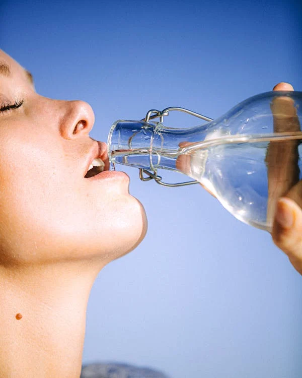
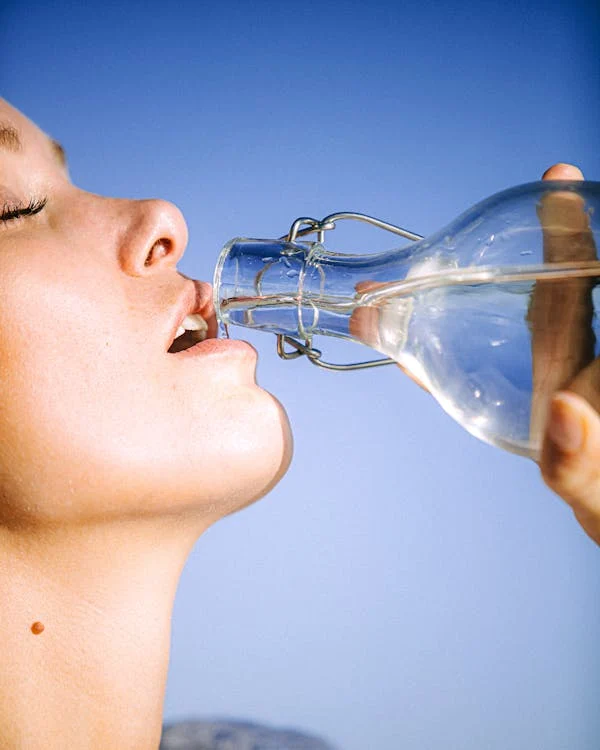

Welcome

Lady drinking by Arnie Watkins.
Access to clean water is a fundamental human right, yet many people around the world struggle to obtain it. Our mission is to raise awareness and provide solutions to help those in need.

Lady drinking by Arnie Watkins.
Access to clean water is a fundamental human right, yet many people around the world struggle to obtain it. Our mission is to raise awareness and provide solutions to help those in need.